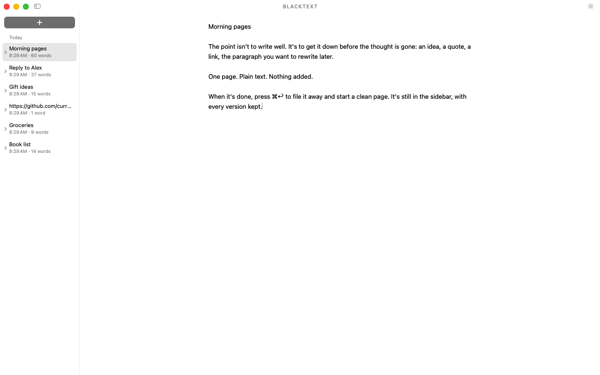
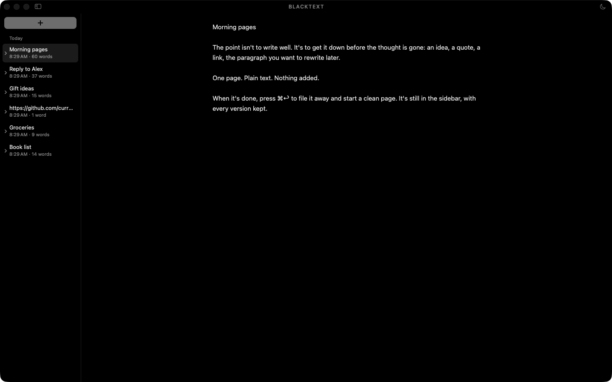
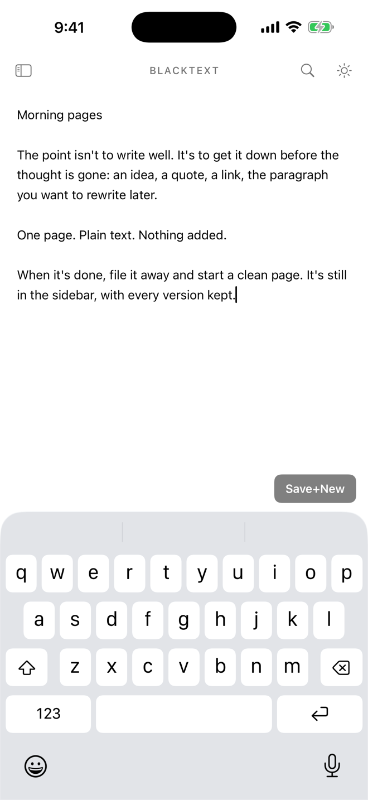
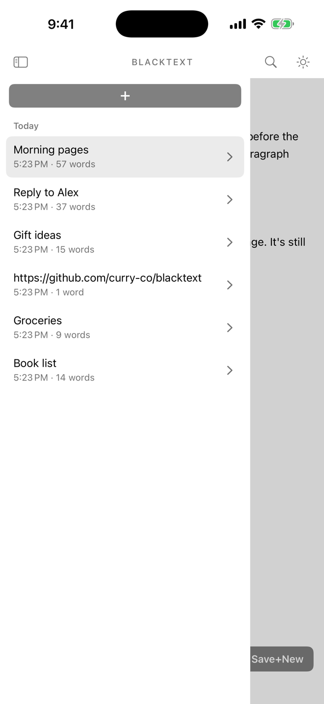
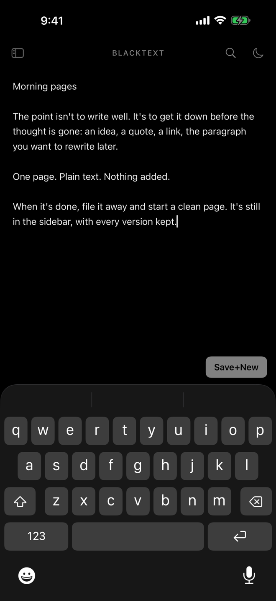
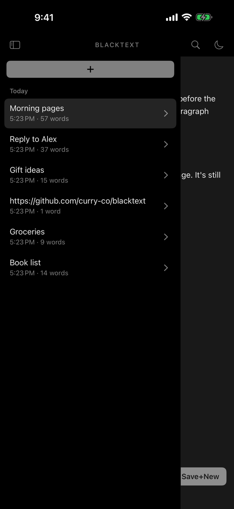

BlackText is one page for typing. There's no formatting, no choice of fonts and no styles: just plain text, in light or dark.
It saves as you type and keeps a timestamped version of each note as it grows. You never press Save, and you never lose a word. When you're done with a thought, one keystroke files it away and gives you a clean page. It's made for the things you jot down for a moment: an idea, a quote, a link, a paragraph you want to rewrite.
- Plain text only. One font, black and white. Paste strips formatting.
- Never lose a word. Saved about a second after you pause, with a version kept every 100 words changed.
- A clean page in one keystroke. ⌘↩ on the Mac, Save+New on iPhone and iPad. Undo brings the note back.
- Find & replace that's live as you type, in one note or across all of them.
- Fast at any size. Ten years of notes open as quickly as the first day's.
- Sync through your own iCloud. Notes, their history and deletions stay the same on your Mac, iPhone and iPad.
- Agents welcome, on the Mac. A built-in MCP server lets Claude, Codex, Cursor and others read, search and write your notes. They can't delete, and every change they make is saved as a version with their name on it.




Nothing added
I take my coffee black. I wanted my notes the same way.
Text is enough. Words don't need bold, fonts or colors to matter. Every style is a decision made instead of a thought finished.
Saving is the app's job. You should never have to press Save, and you should never lose a word.
Fast, forever. A notepad should be ready before the thought is gone, on day one and in year ten.
A clean page is one keystroke away. Most notes are for now: write it, file it, move on. It's still there if you need it.
History is honest. Each version is saved when it happened. You can edit any note, but you can't rewrite the past.
Agents are guests. They can read, search and write. They can't delete, and everything they change is labeled.
When in doubt, leave it out.
Your notes are yours
They live in one file on your device. Sync goes through your own private iCloud database: encrypted in transit and on Apple's servers, and end-to-end encrypted if you turn on Advanced Data Protection. There's no BlackText account and no BlackText server, and the app collects nothing about you. The privacy policy says exactly what goes where.
Open source
BlackText is MIT-licensed, and every line is on GitHub, so you never have to take anyone's word for it. You can build the Mac app yourself; builds you make work the same, except that they don't sync, because iCloud needs Apple's signing.